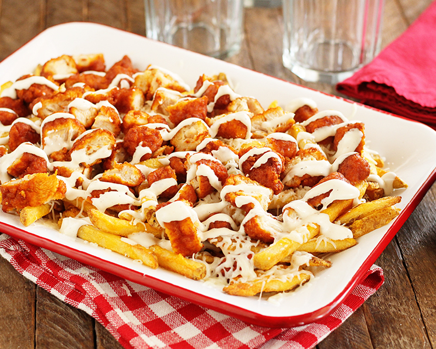

Buffalo Fries

The Delicious, Unstoppable Goodness
Look, who doesn't love buffalo fries? They're buffalo and they're fries,
they can even be vegan! (But they probably shouldn't be, if I'm being
honest.)
Ingredients
- 1 (28-ounce) bag frozen french fries
- 1 (24-ounce) bag frozen boneless buffalo chicken bites
- 1 (8-ounce) package shredded mozzarella cheese
- 1/3 cup ranch dressing
Steps
- Cook the french fries and chicken bites according to the package instructions.
- Coarsely chop the chicken bites.
- Spread the french fries on an oven-safe platter. Sprinkle with about half of the cheese. Top with the chopped chicken bites. Then sprinkle with the remaining cheese. Return to the oven at 350°F for about 5 minutes or until the cheese melts.
- Drizzle with the ranch dressing and serve.